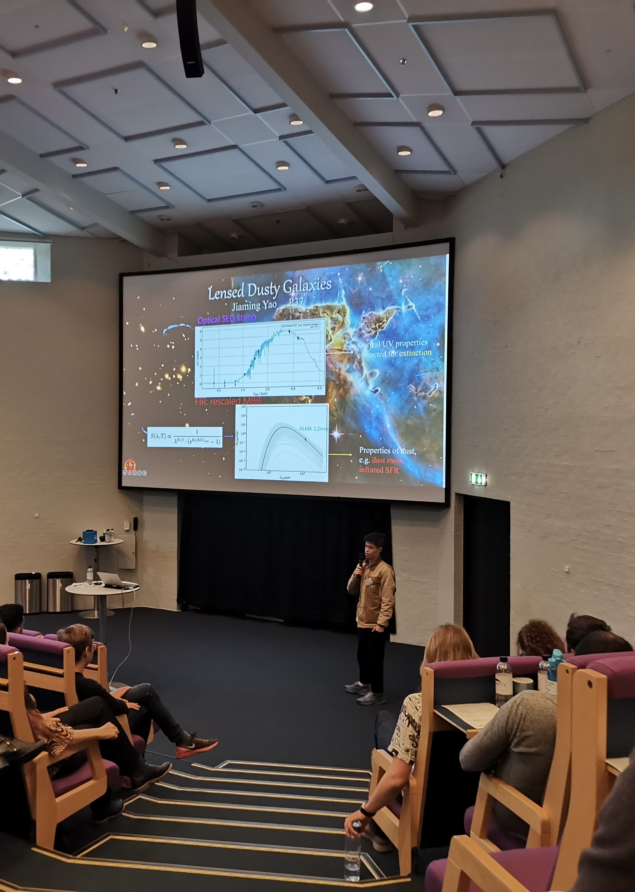
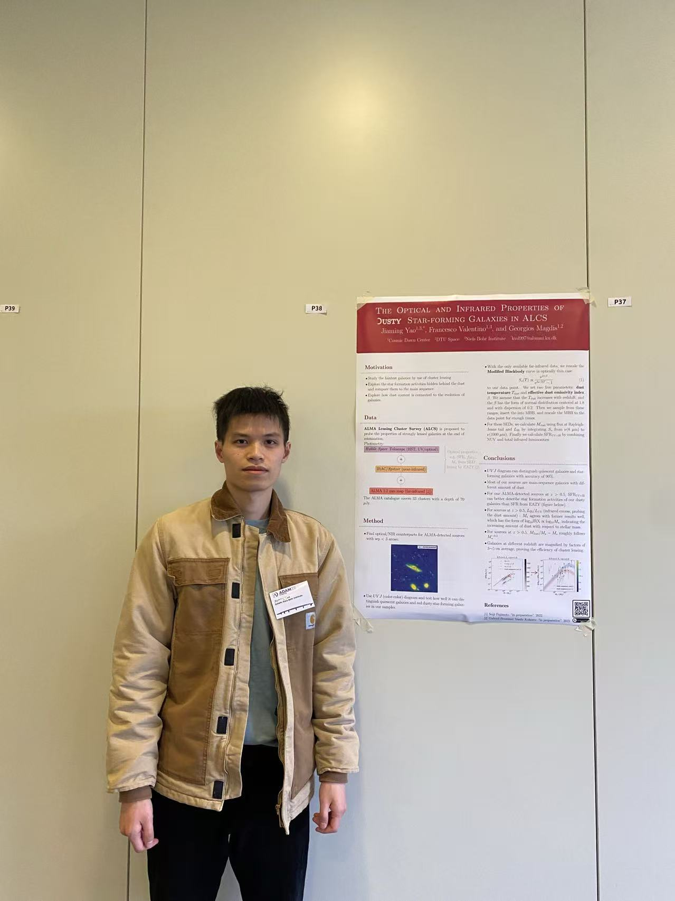

Outreach & Conferences Astrophysics
Conference presentations, science communication, and public outreach activities.
Annual Danish Astronomy Meeting (2022)
Fredericia, Denmark · June 2022I presented my Master's research on lensed dusty star-forming galaxies in ALCS at the Annual Danish Astronomy Meeting in Fredericia, through an oral talk and a poster session, engaging with the Danish astronomical community.

